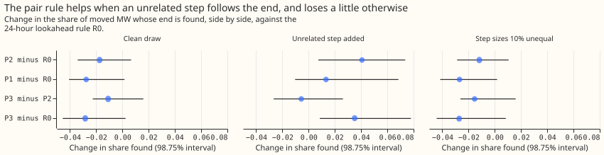
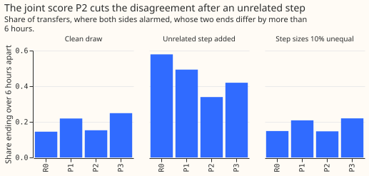

Experiment 253: does the pair of substations give a better end time for a load shift?
Reading the two substations of a load shift together makes their end times agree and finds the true end more often when an unrelated step follows it, but it finds the true end slightly less often on ordinary transfers, and it leaves the real 14 January 2026 shift between substations D5 and D16 unchanged. A load shift is a temporary move of demand from one Primary substation (the donor) to another (the receiver). The end of the shift is the step that returns the donor's and the receiver's summed demand to its earlier level. Today the forecast card of each substation reports an end time estimated from that substation's demand alone, and the two cards can disagree by days. The load-shift screen (LSC) is the detector that raises an alarm where a substation's demand steps. We took the LSC of experiment 148, whose rule R0 waits 24 hours before it fixes an end, and added three rules (P1, P2, and P3) that estimate the end from a substation together with its metered neighbours. We scored every rule on four sets of transfers. The first is the 1,160 transfers that experiment 148 added to real demand (the clean draw). The second repeats them with an extra demand step, unrelated to the shift, added after the true end of one substation. The third repeats them with the donor's and receivers' steps differing by 10%. The fourth is the labelled real transfers, whose start and end come from NGED's switching log. A side is the donor or a metered receiver of one transfer, and "found" means that the side's alarm starts within 2 hours of the true start and ends within a tolerance of the true end.
On the clean draw the best of the new rules, P2, finds the end for 0.770 of the MW moved, against
0.788 for R0
(-0.017, 98.75% interval -0.034 to +0.007). With the unrelated step added it finds 0.633 against
0.593 (+0.041, +0.007 to +0.074). The decision rule, written before the run, needed the lower end
of the clean-draw interval to be above -0.02, and it is -0.034, so the verdict is inconclusive.
The next version should keep the balance test (the check that the donor's and receivers' steps sum
to about zero), and should let a substation with no return step of its own take the other
substation's end.


Definitions
- Half-hour stamp: the unit of time of every table here; 48 stamps make a day.
- Alarm, onset, noise unit: the load-shift screen (LSC) raises an alarm on a substation at the half-hour where its demand steps most, and the alarm opens an interval. The step is measured as the mean demand over the next 24 hours minus the mean over the 24 hours before. A noise unit is the usual size of that step in odd-numbered months, per substation, when nothing is injected.
- Injected draw: the 1,160 transfers that experiment 148 added to real demand, drawn with seed 8200 and not changed (602 of them start in even months and do not have series 12 as the donor). Each moves a share of the donor substation's demand to one to three receivers, some metered and some not. The shapes S2, S3, and S4 give the transfer a flat, a receiver-shaped, and a mixed daily profile.
- Detector: arm B of experiment 138, with that experiment's stored scorer and threshold.
- Share found: the share of sides whose interval starts within 2 hours of the true start and ends within the tolerance of the true end, weighted by the MW moved divided by the number of sides of the transfer; experiment 148 scored a transfer as found if any side was, and R0 reproduces that number as a check.
Arms
- R0: experiment 148's rule at a lookahead of 24 hours, each side alone. The end is the stamp of the largest opposite step seen so far, fixed once no larger step follows for 24 hours.
- P1: R0, but only balanced stamps are candidates. A partner is a neighbouring metered substation (the experiment 138 neighbour table) whose own largest opposite-signed step within 2 hours of the alarm is at least 1.5 noise units. A stamp is balanced when the side's step plus the partners' steps at that stamp is under half the side's step. Unbalanced stamps are skipped. A side with no partner, or with no balanced stamp that meets R0's size test, keeps R0's end.
- P2: P1 with a joint score. At each balanced stamp the score is the smallest, over the side and its partners, of that substation's opposite step divided by its own onset step. A stamp needs a score of 0.5 or more, and the end is the stamp with the largest score, fixed by the same 24-hour lookahead.
- P3: P2 with the score replaced by the output of a small neural network (scikit-learn multi-layer perceptron, 8 hidden units, seed 253) over seven features of both sides: own and partner returns, balance, time since onset, return in noise units, and share of the running peak. The target is that the stamp is within the tolerance of the true end. Training uses 600 injected transfers (shapes S2 to S4) that start in odd months, drawn with seed 8400.
- Causality: every arm uses only the steps up to 24 hours (plus the step window) after the candidate end. The true end is used only to pick populations, to train P3 on its own draw, and to score.
Variants of the injected draw
- Clean: experiment 148's draw.
- Unrelated step (C): on one side of each pair transfer, chosen by seed, an extra step lasting 3 days starts 2 to 20 hours after the true end, in the direction that restores the side's level, at 1.0 to 1.5 times the side's own return step. The other side shows nothing. This is the situation of the 14 January 2026 shift, and the clean draw never contains it.
- Unequal steps (U10): each transfer's receiver shares are multiplied by 0.9 or 1.1, chosen by seed, so the two sides' steps differ by 10%.
Results
- Check: R0 on the full draw, scored as experiment 148 scored a transfer, finds 0.794, as in experiment 148.
- Ceiling: on transfers with a metered receiver, experiment 148's best-of-sides score is already 0.962 against a ceiling of 0.980 (the share whose start is found), so the brief's predicted gain of 0.03 to 0.10 in that score was out of reach. The plan was revised to score each side before any code ran.
- Share found, side by side (95% interval), pair transfers, shapes S2 to S4, even months: clean R0 0.788 (0.743 to 0.850), P1 0.760, P2 0.770 (0.718 to 0.848), P3 0.759; unrelated step added R0 0.593 (0.549 to 0.640), P1 0.606, P2 0.633 (0.588 to 0.683), P3 0.628; unequal steps R0 0.781, P1 0.754, P2 0.769, P3 0.754. The offline rule OFF finds 0.785, 0.621, and 0.779.
- Contrasts (98.75%): clean P2 minus R0 -0.017 (-0.034 to +0.007), P1 minus R0 -0.028 (-0.041 to +0.002), P3 minus P2 -0.011 (-0.023 to +0.016); unrelated step P2 minus R0 +0.041 (+0.007 to +0.074), P1 minus R0 +0.013 (-0.010 to +0.068), P3 minus P2 -0.006 (-0.027 to +0.026); unequal steps P2 minus R0 -0.012 (-0.029 to +0.011), P1 minus R0 -0.027 (-0.042 to +0.002).
- False-end share: clean 0.047 (R0), 0.052 (P1), 0.053 (P2), 0.052 (P3); unrelated step added 0.041 (R0), 0.104 (P1), 0.093 (P2), 0.112 (P3). P2's false-end share is under the 0.10 limit.
- Disagreement between the two sides' ends (transfers where both alarmed): clean, the median is 0 hours for R0 and P2, and the share over 6 hours is 0.145 (R0) and 0.153 (P2). With the unrelated step the median falls from 8.5 hours (R0) to 2.5 (P2), and the share over 6 hours from 0.579 to 0.339. P3's median is 5.0 hours.
- Predictions: the share-found prediction of -0.01 to +0.02 on the clean draw failed for P2 (-0.017) and for P1 (-0.028). The prediction that P1 and P2 keep two thirds of their clean-draw gain under unequal steps cannot be scored, because the clean-draw gain is negative. The predicted gain of +0.05 to +0.20 with the unrelated step was not reached (P2 +0.041, P1 +0.013). The prediction that P3 beats P2 by under 0.02 held, and P3 is not adopted.
- Real labelled transfers (descriptive): 55 transfers have two or more metered sides (111 sides), and the start is found on 26 sides. The end is within the tolerance of the logged close on 20 sides for R0, 21 for P1 and P2, and 22 for P3, but P3's median end error is 2.8 hours against 0.8 for R0 and P2. For the 6 transfers where both sides alarmed, the median gap between the ends is 6.8 hours for R0 and 0.0 for P2.
- The 14 January 2026 shift: every rule gives the same ends as the card: D5 ends after 9.2 days and D16 after 2.0 days. D16 has no stamp where the opposite step reaches the 5.0 noise units the rule needs (its largest is 2.1), so its end comes from the level tracker. D5 has 13 qualifying stamps and none is balanced, so P1 and P2 fall back to R0's choice. The pair rule therefore cannot say which card is right.
- Post hoc, one metered receiver only: P2 minus R0 is -0.009 (-0.038 to +0.012) on the clean draw and +0.055 (-0.002 to +0.105) with the unrelated step; the share of transfers over 6 hours apart falls from 0.604 to 0.321 with the step. The loss on the clean draw is mostly in transfers with two or more metered receivers.
- Post hoc, group balance (P1G, P2G): summing every neighbour that stepped at the onset, of either sign, gives P2G minus R0 of -0.018 (-0.037 to +0.005) clean and +0.031 (-0.008 to +0.075) with the unrelated step. Group balance does not remove the loss.
Checks
- Forecast checks: no forecast is scored, so the median-minus-mean and mean-error checks do not apply.
- Audit triggers: trigger 5 (a nested arm beats the arm that contains it) fires, because R0
beats P1 and P2 on the clean draw, and the unequal-step condition of the decision rule also fails
(P2 minus R0
-0.012, -0.029 to +0.011). The explanation tested here is that the balance test rejects
the true end when the group is not fully balanced; the single-receiver and group-balance runs
above show the loss shrinks to -0.009 for one receiver and does not vanish with group balance.
Trigger 2 (a prediction contradicted) fires for the unrelated-step gain, which came out at +0.041
against +0.05 to +0.20. A code and numbers audit by a reviewer agent replaced the Opus audit
that the
ml-experimentskill asks for; its findings are triaged in the pull request. The seven triggers are listed in that skill's "Audit before merge" section. The other five triggers did not fire. Leaving one series out was not run, and no claim here is per series. - Not run on all transfers: the long transfers of experiment 148 and alarm merging were left out.
Caveats
- Series 12 is blanked in the detector's input. Where it is a receiver, its side row can never alarm, so it lowers every rule's share found by the same amount (54 side rows in the clean draw).
- The unrelated step also changes which alarms exist: the share of sides with a start found falls from 0.836 to 0.784 under variant C for every rule, so absolute shares under C mix the two effects, and the contrasts do not.
- The fallback to R0's end is reported late. When no balanced stamp exists, P1, P2, and P3 keep R0's end, but the end is reported only when the 14-day search window has ended, because a balanced stamp could still appear.
- Disagreement counts any transfer with two or more alarmed sides, including transfers with three or four sides; the real-transfer figure rests on 6 transfers.
- Partner finding is favourable on the injected draw, because the neighbour table that finds partners is the table the injection draws receivers from. The test of 1.5 noise units is the only detection step.
- The unrelated step is injected by us. Its size (1.0 to 1.5 times the side's own step) and timing (2 to 20 hours after the end) were chosen to resemble the 14 January 2026 shift, so the gain is conditional on such steps being common. The labelled real transfers cannot tell how common.
- Real pairs are few: the start is found on 26 of 111 sides, and 6 transfers have both sides alarmed.
What to try next
The next experiment should make a side with no return step use the other side's balanced end, and should count how often unrelated steps follow real ends. Tying the ends together removes the case the 14 January 2026 shift shows, where one side has nothing to read. Counting unrelated steps in the real telemetry decides whether the gain of +0.04 is worth the loss of 0.017.
Code: ml-experiments/00253-lsc-end-time-pair-rule/; every number above is printed by
e00253_contrasts.py (saved at
data/ml-experiments/00253-lsc-end-time-pair-rule/printed_report.txt)
and e00253_case.py (case_report.txt in the same folder).